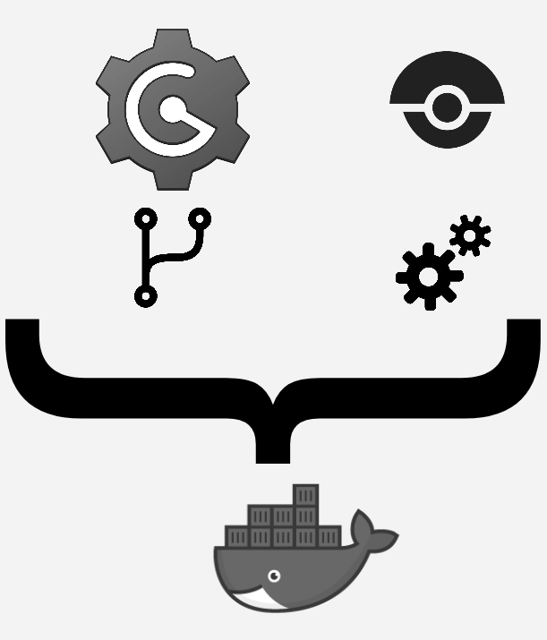

This content was presented on Agile Testers Conference 2017 - Fortaleza Edition
TLTR
Create a continuous integration environment running over Docker containers
All code is available here: https://github.com/rondymesquita/drone-playground PDF Presentation is available here: https://speakerdeck.com/rondymesquita/continuous-integration-with-docker
Steps
For a faster configuration, I recommend you to see README on https://github.com/rondymesquita/drone-playground
Explain me more
Who ever needed to configure a continuous integration environment? If your answer is YES, did you think it was easy? Well, I confess that I had some difficulty to configure this kind of environment some years ago, because there are some steps to follow:
- Download all the tools
- Configure database and CI tool
- Link CI tool to code repository
- Configure user permissions and networking
- Set the build steps
- Make reports and artifacts available
A lot of work, right? But, If I say that this hard working can be reduced?
Docker and Microservices
Here, we are going to use most of benefits that Docker brings us, reducing all the configuration time and focusing on what matters: Have a CI server up and ready to run build steps. Furthermore, Docker brings the possibility to reuse the configuration and makes easier to port the whole setup to a new environment. No further ado, let’s get started!
Tools
Not limited to, but I have tested with these following requirements versions:
- Docker (Docker version 17.06.2-ce, build cec0b72)
- Docker Compose (docker-compose version 1.15.0, build e12f3b9)
- Git (git version 2.7.4)
For this example, I had used:
- Drone - http://drone.io/
- Is a continuous delivery platform built for containers. Will serve as our CI execution server
- Gogs - https://gogs.io
- Self-hosted git repository
Architecture
We will have Drone and Gogs running over Docker containers. Also, we are going to use Docker Compose to make easier networking configuration and make the whole environment portable with a single file.

Show me the code
Drone server is similar with Jenkins in various ways. One of them is a file with build steps declared on it. Here we have de .drone.yml file where you declare the steps and configuration of your repository. You must put this file in the root folder of your project folder.
pipeline:
sampleapp:
image: python:2
commands:
- python main_test.py
Above is just an example file. First I declare my pipeline specifying wich steps will be executed. So, I created a sampleapp step. You can set any name you want. Inside the sampleapp block, I declare what docker image I am going to use for this project and what commands will be executed for it. Check this out here https://github.com/rondymesquita/drone-playground/tree/master/sample-app-python
Step by step
Note
I recomend you to use the tasks.sh file on the code example.
Configuration
Let’s configure the environment. We are going to use docker-compose file with all services required for the continuous integration environment. The services are:
- Postgres: Database for Gogs
- Gogs: Self-hosted git repository
- Drone-server: Will handle the build steps
- Drone-agent: Will execute the build steps
Here is the docker-compose.yml file used.
version: '2'
services:
postgresql:
container_name: postgresql
image: postgres:9.6.3
ports:
- "5432:5432"
networks:
- gogs
environment:
POSTGRES_PASSWORD: password
POSTGRES_USER: gogs
gogs:
container_name: gogs
image: gogs/gogs:0.11.19
ports:
- "10022:22"
- "3000:3000"
networks:
- gogs
depends_on:
- postgresql
volumes:
- /var/gogs:/data
drone-server:
container_name: drone-server
image: drone/drone:0.7
ports:
- "8000:8000"
networks:
- gogs
depends_on:
- gogs
volumes:
- /var/drone:/var/lib/drone/
environment:
- DRONE_ADMIN=gogs
- DRONE_OPEN=true
- DRONE_HOST=http://drone-server:8000
- DRONE_GOGS=true
- DRONE_GOGS_URL=http://gogs:3000
- DRONE_SECRET="mysecret"
- DRONE_NETWORK=droneplayground_gogs
drone-agent:
container_name: drone-agent
image: drone/drone:0.7
command: agent
networks:
- gogs
depends_on:
- drone-server
volumes:
- /var/run/docker.sock:/var/run/docker.sock
environment:
- DRONE_SECRET="mysecret"
- DRONE_SERVER=ws://drone-server:8000/ws/broker
networks:
gogs:
driver: bridge
Note
To speed up the Gogs database configuration, I copy the file https://github.com/rondymesquita/drone-playground/blob/master/app.ini to /var/gogs/gogs/conf/ folder on my host machine. This folder is a shared docker volume used by Gogs to store its configuration data. It’s optional, because you can configure Gogs manually, inserting the database url and credentials.
Enter on cloned project folder and execute:
$ ./tasks.sh up
Now, you have all services running on docker containers. You can see them by running:
$ docker ps
To get the services addresses:
$ ./tasks.sh inspect
You should see something like:
*** Information
Container: drone-server
Address: 172.19.0.4:8000
Container: gogs
Address: 172.19.0.3:3000
Container: postgresql
Address: 172.19.0.2:5432
Gogs
Now, let’s configure Gogs. Open on your browser the Gogs address given by inspect command and register a new user. You can use any credentials you want. For this example, I am going to use these:
user: gogs
password: password
email: gogs@email.com
Now, create a new repository. For this example, I am going to use the sample-app-python sample project. Check this out here https://github.com/rondymesquita/drone-playground/tree/master/sample-app-python.
Set the name to sample-app-python and click Create Repository.
Similiar to Github, Gogs will show you the commands to push you code to the remote repository. Just wait patiently. We are going to push soon.
Drone
The Drone configuration is simpler. Due the integration between Drone and Gogs, it is possible to do the configuration with some clicks. As you can see on docker-compose.yml file at drone-server service, there are some environment variables pointing to Gogs. So, open on your browser the drone address given by inspect command.
You should be able to login with same user created on Gogs. For this example: user: gogs and password: password.
Click on Activate link and you should be able to see the repository created on Gogs.
You must:
- Click on toggle switch to enable the repository on Drone.
- After enable, click on gear icon that it will appear;
- Click on Trusted toggle switch to enable drone project to access Docker shared volumes;
That is it!
Repository Configuration
Now, let’s go back to repository configuration.
Again, I’m using sample-app-python sample project.
Enter on the folder and just configure the Git as any other Git repository, paying attention to use Gogs credentials.
git init
git config user.name "gogs"
git config user.email "gogs@email.com"
Configure the remote:
git remote add ci http://[GOGS_IP]:[GOGS_PORT]/gogs/sample-app-python.git
# E.g. git remote add ci http://172.19.0.3:3000/gogs/sample-app-python.git
So now, just add the files to commit, push it and see the magic happens:
git push -u ci master
What will Drone do?
- Drone will create a docker container based on the image informed on .drone.yml.
- Drone will clone the code from Gogs to inside that container.
- Drone will execute the commands in order as they were informed on the .drone.yml file.
Note
You should noticed that I used ci as the name of the remote. Named remote enables you to use multiples remotes for the same repository. So, you can use this approach on a existing project without impact, paying attention only for where you are pushing it.
Shared Volumes and Reporting
When you are working with containers, all container data is isolated from external world. This means that all artifacts generated inside the container, stays in the container. To have access to this data, we need to make use of volumes. Volumes map directories from host machine to the inside the container. That is how we can have access to code coverage report, for instance.
Another good example is a Golang project which is available on https://github.com/rondymesquita/drone-playground/blob/master/sample-app-go/.drone.yml. On this example, the commands are executing the tests and grabbing the code coverage.
workspace:
base: /go
path: src/sample-app-go
pipeline:
sampleapp:
image: golang
commands:
- go build
- go test -coverprofile=coverage.out
- go tool cover -html=coverage.out -o=coverage.html
- timestamp=$(date +%s)
- mkdir -p /var/drone/reports/$timestamp-coverage
- cp coverage.html /var/drone/reports/$timestamp-coverage
volumes:
- /var/drone/:/var/drone/
Note that the coverage is generated and copied to the shared volume. So it is possible to get the coverage report on the host machine by accessing /var/drone/reports/. This is the reason of enabling the Trusted flag on Drone.
For now, that is it. You just have configured a Continuous Integration enviroment running over Docker containers. I hope it was helpful. If you have any doubts, see the repository on Github and/or send me a message.